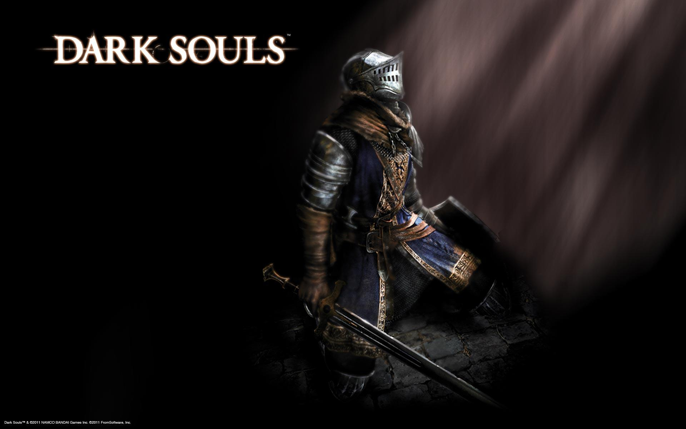
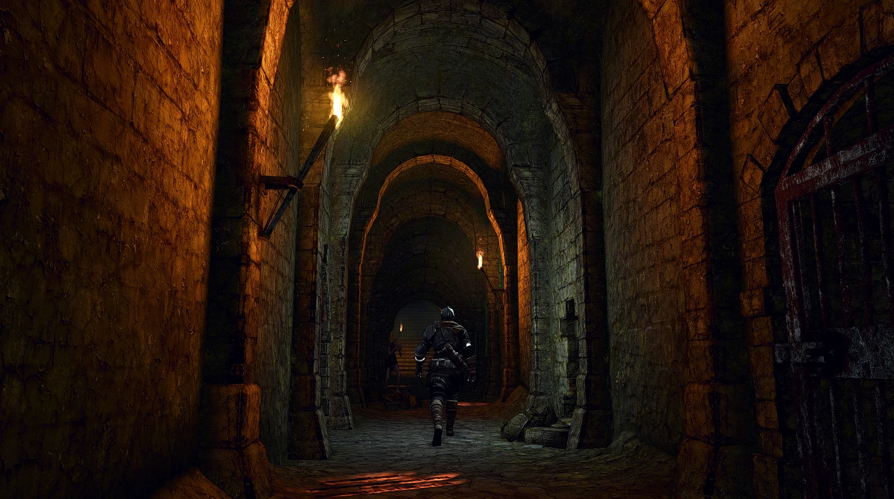
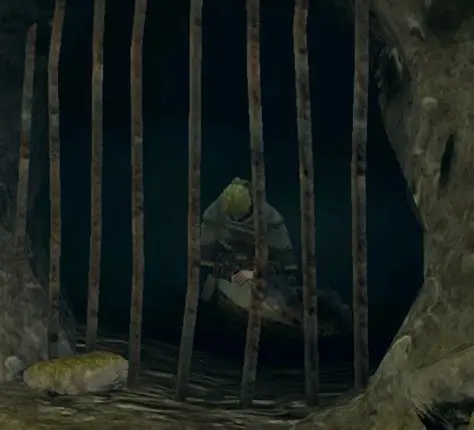
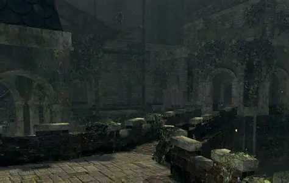
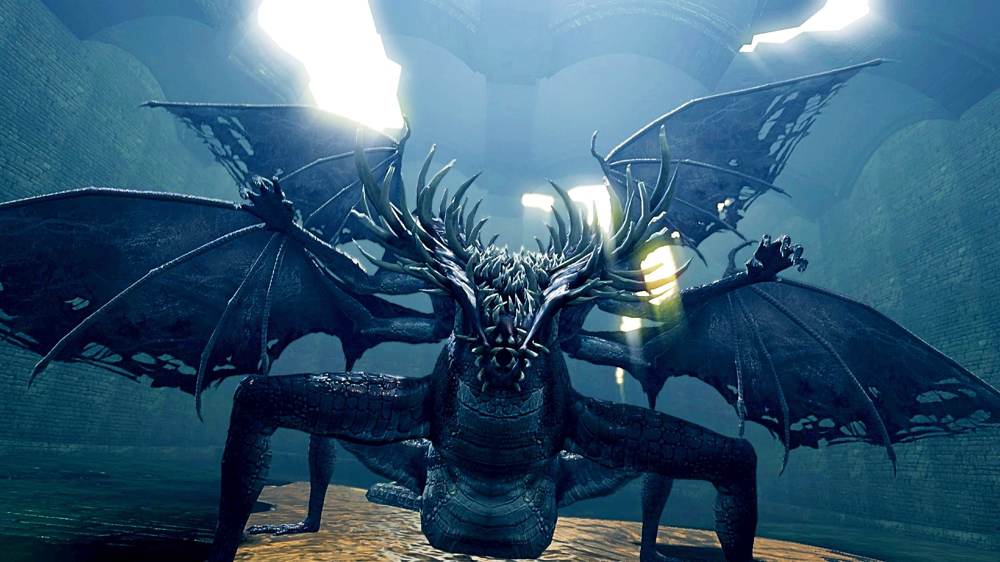
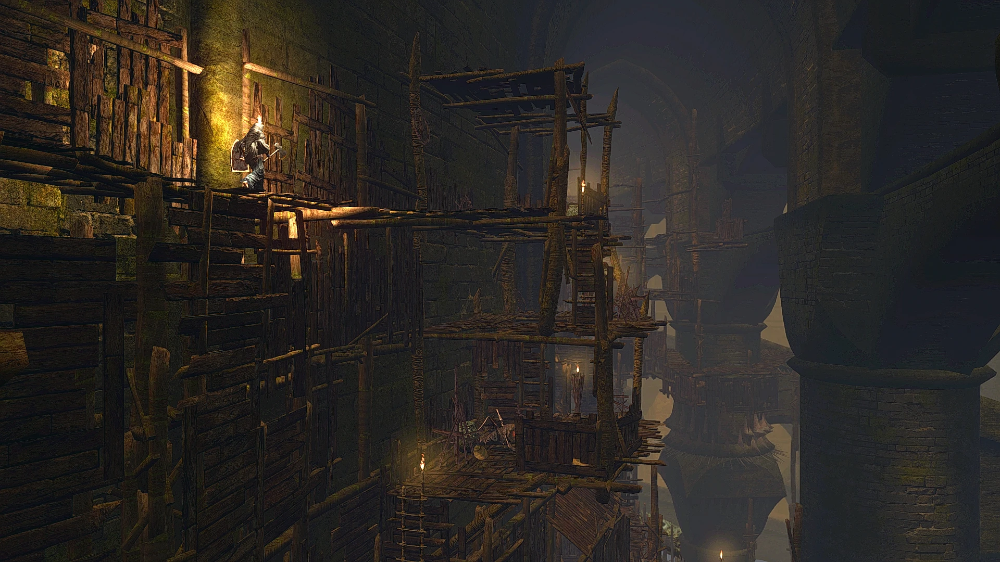

When I first took a dive into the chaos firestorm that is Dark Souls back in its inception, I only saw the game for its minimalist storyline and technical gameplay. It was a swift, enticingly difficult game that kept you coming back for more. From the AI enemies cheating you at every corner, to the overpowered boss fights, the satisfaction of the final boss Lord Gwyn finally hitting the ground after every curse word or controller thrown made the struggle worth it. Though, as I played more FromSoftware games throughout the years, I found that the game was much more than just the mechanics, it had a deep intertextual storytelling at your fingertips that gave the game a living breathing lore, but many gamers miss the cues because it is hidden within the inventory.

When you drop into the world of Lordran at the start of the game you are welcomed with a fantastical story of dragons and gods. There was a fall from grace, a corruption of power and a plagued Age of Fire that reigns upon the land. You wake up in a dark cell surrounded by rats, and the semblance of decay, a visual synecdoche for the entire world. Suddenly a body drops from above carrying a key. The key description reads
“A mysterious knight, without saying a word, shoved a corpse down into the cell, and on its person was this key. Who was this knight? And what was his purpose? There may be no answers, but one must still forge ahead.”
You open the door and walk through the halls of the prison passing hollowed humanoids. If you kill one, they drop a Soul of a Lost Undead that states that they have turned hollow long ago and that souls are sought by hollows and undead to prolong their humanity. This is the moment you realize that in this world, the currency of your being is earned by the elimination of others. Traveling the rest of the asylum you find your next key. This one includes an alluding to a future obstacle by stating
“Even if an Undead were to escape from a cell, passage to the outside world would not be gained easily”
As you use the key to enter the west wing of the prison in a broken alcove you find a knight. He gives you a healing item called an Estus Flask before dying. The description on the flask reads. “Fill with Estus at a bonfire” and “drink to restore HP”. Though there is a cost, “The Estus links to the Fire Keepers, she lives to protect the flame, then dies to protect it further.” You realize that this Age of Fire that was brought on by the Gods has been crippling its human inhabitants into a subservient sacrifice for its proliferation. When you find the alluded obstacle at the exit, a giant demon with a hammer, he drops the Pilgrim Key. The key gives a welcoming to your destiny “Big key belonging to a chosen Undead pilgrim, this Chosen Undead knows not what this pilgrimage has in store”. The foreshadowing of your fate echoes through the storytelling of the key as the freedom you seek now carries significant baggage to claim the prophetic role of the Chosen Undead.

As you enter the main game, you are given your first humanity. The ambiguous item that will be your lifeline for the game. Its description reads
“This black sprite is called humanity, but little is known about its true nature. If the soul is the source of all life, then what distinguishes the humanity we hold within ourselves?”
These items can be sacrificed to fire keepers at bonfires to offer you more Estus Flasks at the cost of burning the essence of their humanity. You are contributing to the perpetuated ritual of human suffering for your own prolonged undead state. The firekeeper’s maiden dress is described as
“It is thought to have once been a white armor set of a maiden but the smoke and ash from the bonfires darkened it over the years”.

This act of kindling is the fire keeper’s reason for being a middleman, for the transaction of faded humanity for the ability to live another day. Ironically the rite of kindling states “How peculiar that humans had found little use for humanity until they turned Undead.”
As you fight your way through the game, your path of righteousness as a chosen undead looks more like a sacrificial chore than a noble cause as each area symbolizes you throwing away your sanity just as you are with your humanity to the flame.
First you unlock the Lower Undead Burg
“The lower Undead Burg is a treacherous place.” (Basement Key)

Then you proceed further into the Depths.
“Those banished from the Undead Burg eke out their existence in the Depths, a damp lair with no trace of sunlight. Nearly half of the Depths form a perilous flooded labyrinth.” (Depths Key)

After a treacherous dragon battle at the heart of the depths, you unlock the Key to Blighttown.
“As its name suggests, Blighttown is a place of great pestilence. Even the polluted inhabitants of the Depths are aware of its dangers and built this mighty door in hopes that they could remain safely separated.”

After you go to the literal ends of the scourged land, you are finally met to reconcile your destiny in the final mission. You place the Lord Vessel, the major key item of the game, into the altar and open the gate to the final area. The Lord vessel reads “bestowed upon the chosen Undead who is destined to succeed Lord Gwyn”. You are transferred to the Kiln of the First Flame. The source of human suffering and the lair of Lord Gwyn. After you fight him and retrieve his soul it states that “Lord Gwyn bequeathed most of his power to the Gods and burned as a cinder for the First Flame.” You now realize the goal you have fought for the entire game is the self-sacrifice of yourself for the greater good of the Gods rule. Every obstacle you have faced up to now was not a noble victory of attrition; it was a gatekeeping test of power for your final moment. The Gods said, we need the next greatest piece of wood to throw on the fire to last another century. You realize that all you have fought through tooth and nail was for nothing. Humanity you belong to is a sacrificial lamb for the beings that only promote a dying age. Though if you play the game, you realize there is another ending… one to just walk away and let the embers fade into obscurity. Ushering in a world of darkness, one of the Dark Souls.

Replaying this game with a better appreciation of the intertextual storytelling has been a great experience in the grand understanding of world building. This is something I urge people to look for in any form of media. Investigate for clues and breadcrumbs that the author has left for the audience to find. It is a great way of expanding an idea without direct interaction. If you like blog posts, please reach out to my social media links and give me a follow.